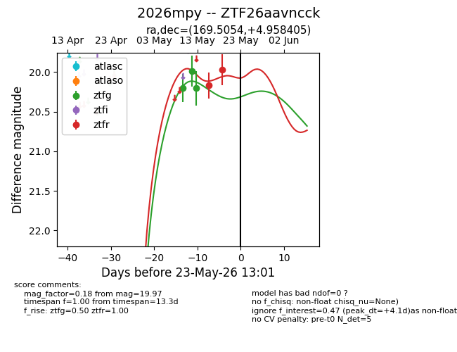
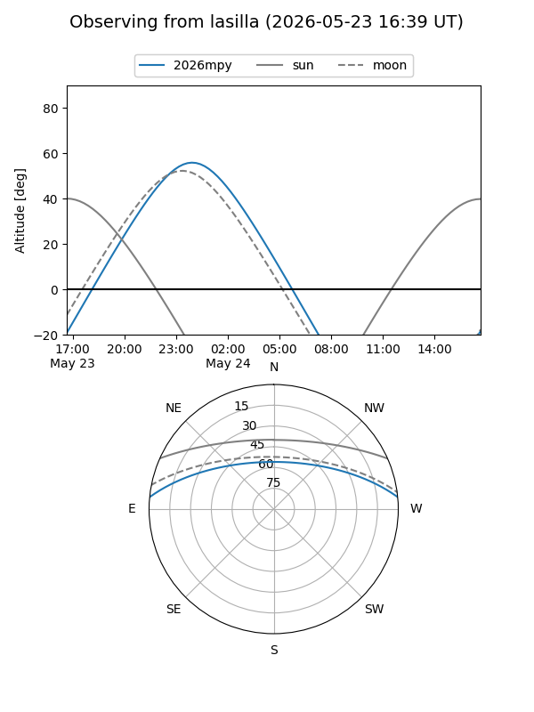
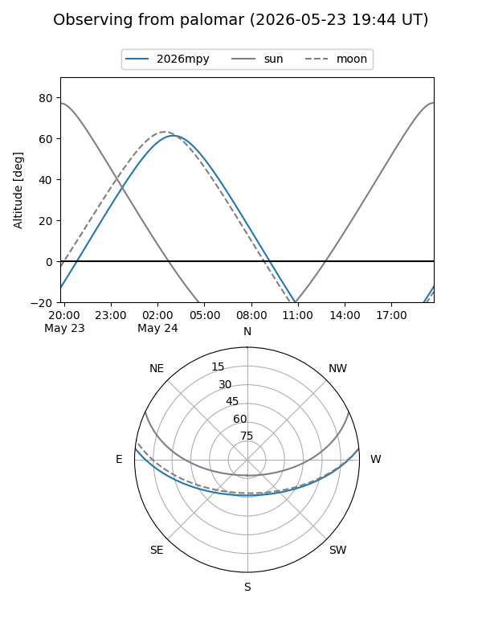
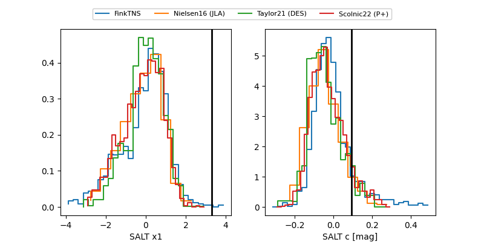

2026mpy
Target 2026mpy at 2026-05-23 13:03
Aliases and brokers:
lsst-FINK: link
lsst-Lasair: link
lsst-ALeRCE: link
ztf-FINK: link
ztf-Lasair: link
ztf-ALeRCE: link
TNS: link
YSE: link
alt names
ZTF26aavncck (ztf,fink_ztf)
2026mpy (tns,yse)
Coordinates:
equatorial (ra, dec) = 169.5054,+4.95840
equatorial (HMS+DMS) = 11:18:01.30,+04:57:30.26
galactic (l, b) = (253.6689,+58.58648)
Flags:
Photometry:
last ztfg=20.20, ztfr=19.97
3 ztfg, 2 ztfr detections
Lightcurve

Visibility


Additional plots
